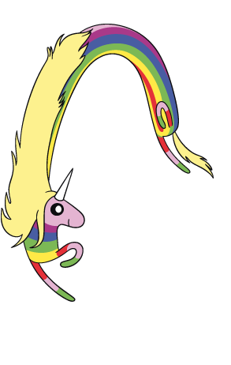
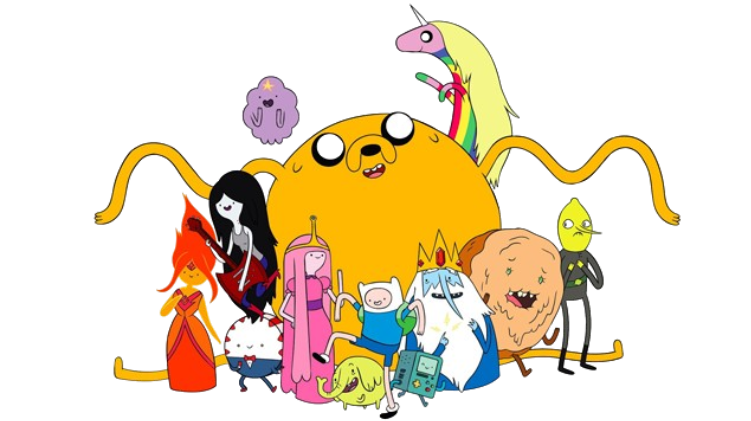
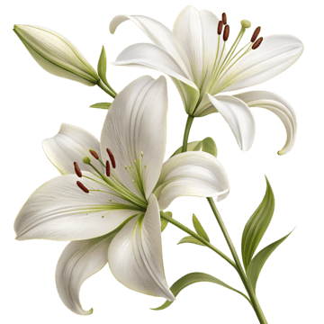
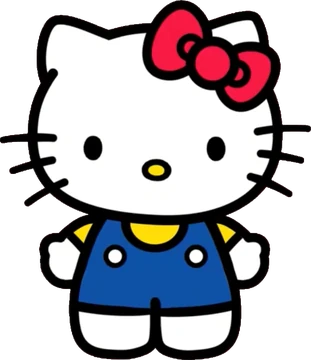
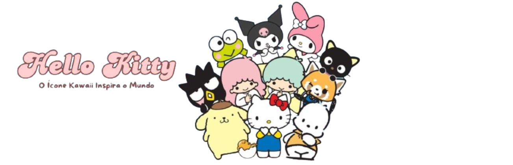
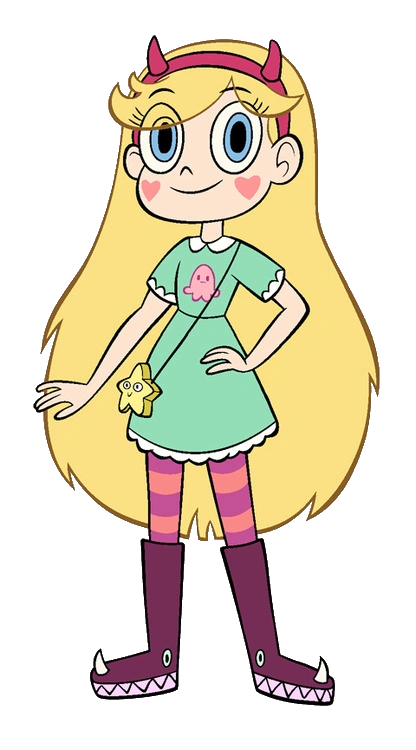
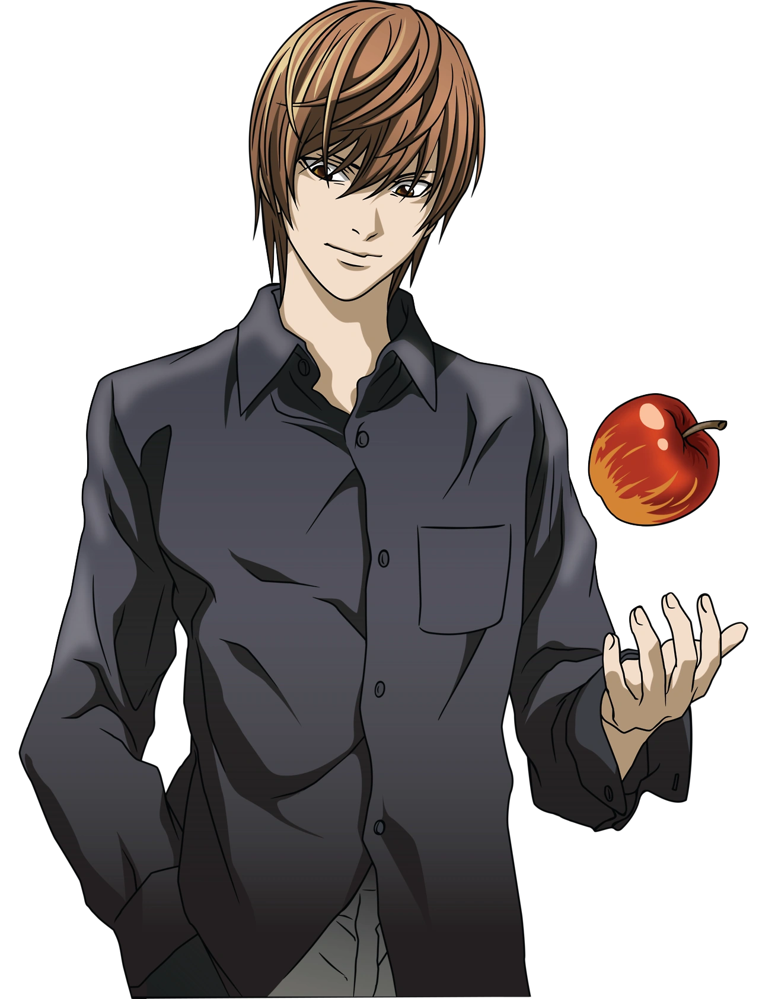
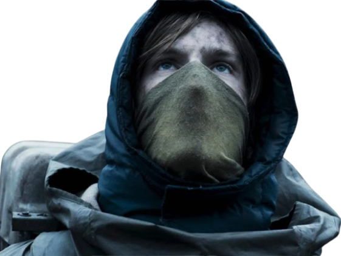

Hora de Aventura
Um universo colorido, estranho e bonito igual os melhores sentimentos
Essa parte é para lembrar que algumas pessoas parecem mundos inteiros: cheias de cor, de detalhes, de histórias e de um jeito único de existir.
Nosso desenho favorito né tropa, talvez a secção mais importante dentre todas essas.


Música
Para quem carrega trilhas sonoras dentro do coração
Tem músicas que parecem abraços, outras parecem saudade, outras parecem uma lembrança que ainda nem aconteceu.
A gente sempre conversa sobre música e você foi uma das poucas pessoas que ouve Big ush e me entende musicalmente, sempre escutando o que eu recomendo.
Espaço para uma playlist dela
- ♪ Kiss Me - Sixpence None The Richer
- ♪ Espero - Big Rush
- ♪ Chiclete dentro de mim/Fogo dentro de mim — Adventure Time Songs
Lírios
Lírios, a flor mais bonita para combinar com sua beleza.
Os lírios combinam com essa ideia de beleza tranquila: algo que não precisa chamar atenção o tempo todo para ser marcante.
Os lírios são suas flores favoritas, e faz total sentido porque não teria flor mais bonita pra te definir. E eles sempre me farão lembrar de você.



Hello Kitty
Um lado fofo, leve e impossível de não gostar
Essa seção é aquela que deixa tudo mais confortável, mais bonito e mais leve.
Acho que é praticamente impossível não pensar em você sem pensar na hello kitty né, toda vez que eu olho para uma hello kitty aqui em casa eu já penso em você.
Star vs. As Forças do Mal
Caos, brilho, coragem e um pouquinho de magia
Essa parte é para o jeito intenso, criativo e cheio de energia que algumas histórias têm — e que algumas pessoas também têm.
Seu segundo desenho favorito depois de Hora de Aventura, um dia eu vou assistir ele só para podermos conversar horas que é uma das coisas que eu mais gosto de fazer com você.

Death Note
Para o lado misterioso, inteligente e intenso
Nem tudo que ela gosta precisa ser fofo. Às vezes, as histórias mais marcantes são as sombrias, cheias de tensão, estratégia e personagens inesquecíveis.
Seu anime favorito, eu ainda lembro do primeiro dia que a gente conversou e você falou que Death Note era uma obra prima e tinha que ser assistido duas vezes.

Dark
Tempo, destino e a distância que não diminui o carinho
Dark combina com mistério, conexões e com a sensação de que algumas coisas atravessam tempo e distância. Talvez por isso essa seção combine tanto com um presente feito de longe.
Drak é a nossa série favorita e ela fala muito sobre o tempo, e eu penso duas coisas sobre isso, o tempo que falta pra gente se ver e que mesmo com fusos diferentes e a distância que nos separa, eu ainda consigo sentir o quanto você é especial e o quanto eu gosto de você.

Mensagem final
Para terminar...
Eu queria que esse presente fosse mais do que uma página bonita. Queria que ela fosse especial pra você sempre lembrar dela com muito carinho. E eu espero que você sinta o quanto você é especial para mim.
Que seu aniversário seja leve, bonito e cheio de carinho. Mesmo de longe, eu espero que você sinta o quanto você é especial. Com amor, Agrinha Amante de skol beats.